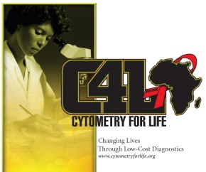
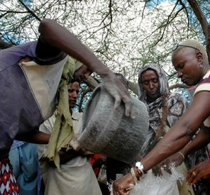

|

 |
Scientists Bring Solutions to AIDS testing in AfricaScientists at Purdue University have developed a program to effectively attack a very difficult problem for AIDS patients particularly on the continent of Africa. There are many problems, but one problem that has been plaguing health care providers across Africa is the inability to monitor blood lymphocyte levels in patients. This simple test is current run on very expensive, very complex instruments that are difficult to maintain even in very advanced laboratories. They have little chance of working efficiently in rural Africa where the greater majority of AIDS patients are. The Cytometry for Life program will bring a battery operated, very low cost, highly reliable lymphocyte counter to any location needed. It's a simple, elegent, low cost solution. It's a solution that Africa cannot afford to have. What is the "Cytometry for Life" program?Cytometry is a field of science that has been around for about 50 years. It is the study of cells and their environment. The living cell is the smallest independent operational unit of the body and understanding how cells work is what cytometry is all about. When cells fail to work, there are serious conssequences - like cancer for instance where some abnormal cells take over the body with disasterous consequences. In AIDS, a virus takes over a very important cell, the CD4 lymphocyte. It destroys the cell and eventually the patient cannot survive. Cytometry really started about 50 years ago with the invention of simple cell analysis tools like the Coulter Counter - a machine that counts blood cells. This was followed by an instrument to sort blood cells into different populations and this instrument was called a cell sorter - a type of flow cytometer. In the 40 years since the invention of the cell sorter by Mack Fulwyler, a revolution has occurred within the world of immunology, primarily driven by innovations of Len Herzenberg and others as cytometry matured into a powerful technology in medical research and clinical practice. Today however, there are between 30 and 40 million individuals in resource-poor nations infected with the HIV virus who desperately need to receive antiviral therapy. There are two primary reasons why they don't get it. First, the cost is high. Many individuals are working hard to reduce the cost of this therapy. Second, in order to receive therapy, each individual must be monitored for his/her CD4 levels. This is primarily done by flow cytometry. Unfortunately flow cytometry is complex and expensive in today's technology-focused world. It should not be. Cytometers can be made very inexpensively. The technology is 40 years old. It has matured to a point that, while next generation ideas are important, they are not the best solution for the immediate problem of AIDS patient evaluation for CD4 levels in Africa today. The Cytometry for Life program aims to achieve the following goals in two primary stagesStage 1:
Stage 2:
Current PartnershipsThe Cytometry for Life program was initiated by individuals in the cytometry community who want to make a difference today- both academics and business people. The goal is to create a program that has as its primary goal, saving lives by using current-day technology at the most effective level and at the lowest possible cost.
You can helpThe "Cytometry for Life" program needs your help to achieve our goals of very cheap tests for AIDS victims in Africa.
|
||||
SURVEY ON CD4We are trying to get quality input into our CD4 project. In order to do this we have created a detailed survey that contains many questions about the CD4 assay and the conditions under which it is needed and carried out. Regardless of who you are or where you are from, we would like your opinion. In order to properly analyze the data however, we will need to know something about you - your experience level, your knowledge of the field, where you are located, etc. You can answer the general questions without identifying yourself, but we would like to have your complete contact information if possible so that we can continue to work with you on this project. The survey can be found on the SPONSOR page of this website. |
|